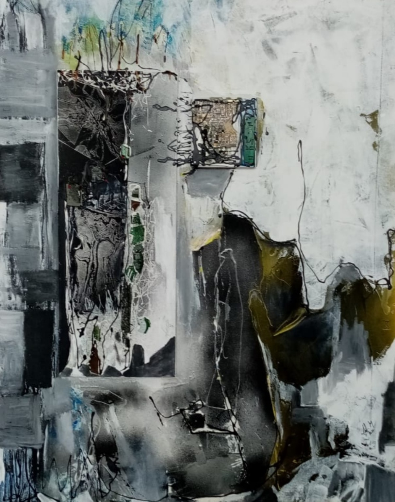

Operă originală
Compoziție monocromă
O lucrare originală de Marcel Duțu, prezentată integral pentru a putea fi privită în detaliu.
INDISPONIBILĂLucrarea nu este disponibilă momentan.
- Tehnică
- Tehnică mixtă
- Dimensiuni
- 70 × 50 cm
- An
- 2023
Datele sunt demonstrative și vor fi înlocuite cu informațiile reale ale lucrării înainte de publicare.